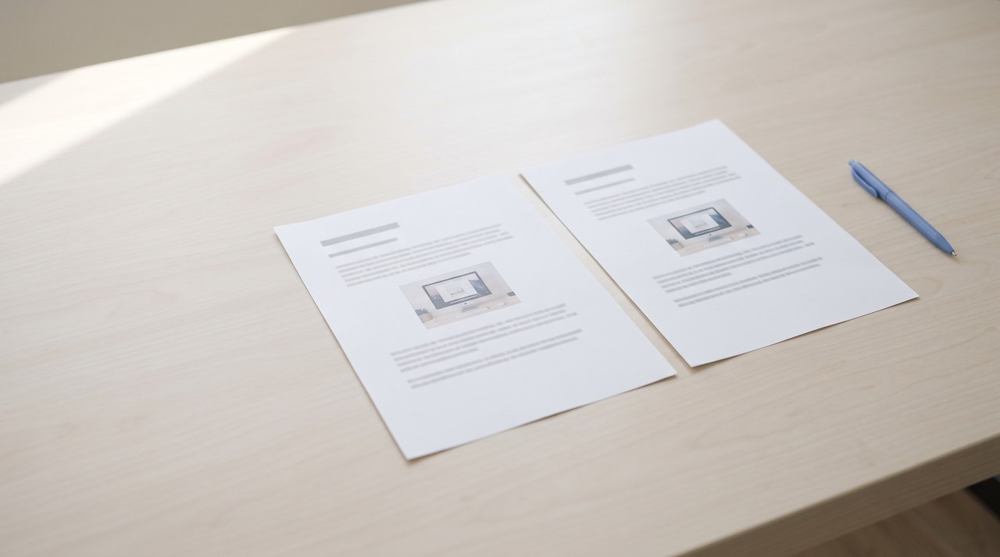

How to convert a video to a Word document and keep the pictures
You cannot convert a video into Word the same way you convert one video file into another, because Word is built for words and pictures rather than moving video. Every converter tool simply transcribes the speech and saves those words into a .docx file. If you also need to see what was on the screen, you should first make a PDF or Markdown document that includes the pictures, and then open that file in Word.
You might have a training video or a recorded lecture that someone wants as a Word file, such as your boss or a teacher, because Word is the program they use to read and add notes. When you search for a converter online, you will find dozens of tools right away. But almost all of them do the exact same thing: they listen to the audio track and hand you a transcript saved as a .docx file.
That transcript is completely fine if you are working with an interview. But if the video shows a computer screen, your text will have lines like "click here" and "as you can see", while the thing being pointed at is gone. If the video shows a screen, a transcript alone is not enough, so keep the pictures too. Below I describe the free method, how Word's built-in tool works, and the route that brings the pictures into Word.
What is the free way to get a video into Word?
If the video is on YouTube and already has captions, you do not need to use a converter at all. YouTube already stores the spoken words, so you only have to copy them over.
- Open the video on YouTube and open the description box underneath the player.
- Click Show transcript, and a side panel will open showing every line of text alongside its time.
- Select all the text in that panel, copy it, and paste it into a blank Word document.
- Delete any time marks you do not want to keep, and add your own headings wherever the topic changes.
This costs you nothing and only takes a few minutes, but it runs into problems in two situations. If a video has no captions, you have nothing to copy, and you do not get any screen pictures at all. Automatic captions also tend to get technical words wrong and rarely include punctuation, so you should plan on doing some editing.
Can Microsoft Word transcribe a video by itself?
Word does have its own Transcribe tool, and you should try it first if you already pay for Microsoft 365. Microsoft's Transcribe help page lists .wav, .mp4, .m4a and .mp3 as the formats you can upload. The service allows 300 uploaded minutes a month under a Microsoft 365 subscription.
There are two catches to keep in mind. That same support page describes Transcribe as an audio tool that produces text with speaker names and timestamps, and it says nothing about capturing picture frames from a video. It also states that the tool requires an internet connection and is currently made for Microsoft 365 on Windows in commercial tenants, meaning work or school accounts, so a personal account might not have it.
The online converters that rank high in search results operate the same way. A service like Sonix takes your uploaded MP4, transcribes the spoken audio, and gives you a DOCX file. The resulting text can turn out well, but it is still only words, and your video file has to leave your computer to get processed.
Which way should I use?
| Way | What ends up in Word | What you give up |
|---|---|---|
| YouTube transcript, pasted | Words and time marks | Pictures, and any video with no captions |
| Word's Transcribe | Words, speakers and times | Pictures, and 300 uploaded minutes a month |
| A transcription website | Words in a DOCX file | Pictures, and your file is uploaded |
| PDF with pictures, opened in Word | Words and screen pictures | The layout can shift |
| Markdown with pictures, through Pandoc | Words and screen pictures, cleanly separated | One small free tool to install |
If the video is just someone talking, use the transcript. If the video shows a screen, use one of the last two.
How do I get the screen pictures into Word as well?

You have to make this document in two steps, because no common tool writes spoken words and screen pictures straight into a .docx file. First you generate a document that holds both together, and then you bring that into Word. I should be plain about my own tool here: VideoDoc does not write a Word file, and I never added a Word button, because PDF and Markdown covered what I needed for myself, which is reading a video later and passing the text to an AI.
You paste a link to a public video or select a file on your computer, and VideoDoc runs entirely on your own machine. It creates doc.pdf and doc.md, and it puts an images folder right beside them. The spoken words carry timestamps, and the screen pictures sit at the exact moment they showed up in the video. From there, you have two simple ways to bring everything into Word.
What happens when you open the PDF in Word?
This is the easy route, and you do not need to install anything new. Inside Word, click File, choose Open, and select doc.pdf. Word will create an editable copy of the document and leave your original PDF file alone.
Microsoft's page on opening PDFs in Word is completely honest about how this works. It explains that the result might not look identical to the PDF, that the conversion works best on documents that are mostly text, and that a page with a lot of graphics might turn into an image where the text cannot be edited. A video document contains many pictures, so you should look through the first few pages before you share it with anyone.
How do I turn the Markdown file into a Word document?
This route takes a few extra minutes the first time you try it, but the words and pictures arrive as separate items that you can edit. Markdown is a plain text file format that uses simple characters for headings and images, and doc.md only points to each picture stored in the images folder. Pandoc is a free tool that converts between document formats, and its manual lists docx as one of its supported outputs.
- Install Pandoc by downloading it from its website.
- Open the folder where VideoDoc placed doc.md and the images folder, and make sure to keep them together.
- On Windows, click the folder address bar, type cmd, and press Enter. On a Mac, open Terminal inside that folder.
- Type
pandoc doc.md -o doc.docxinto the prompt and press Enter. - Open doc.docx inside Word and verify that the pictures are all there.
If you see Word's empty picture boxes or a blank line where an image should be, the command almost certainly ran from a different folder, so Pandoc could not find your pictures. Run the command again from inside the exact folder that holds doc.md.
Because VideoDoc does not create a .docx file, moving your document into Word is always a second step. The link option only works for public videos, so a private or members-only video has to be a file on your computer first. Time marks arrive in Word as plain text instead of clickable links, and a file with many pictures becomes quite large and can shift layout during PDF conversion, so always inspect it before sharing. I am going by Microsoft's and Pandoc's own pages here, and both tools can change how they work.
Try it on the video someone asked you to write up.
Try it free in your browser on a file you already have. Pro is $19 once for a lifetime licence on 2 machines, on Windows and Apple Silicon Macs.
Quick questions
How do I convert a video to a Word document for free?
If the video is on YouTube and has captions, click Show transcript, copy the text from the panel, and paste it into Word. That gives you the words and timestamps for free, but it will not include any pictures from the screen.
Can Word convert an MP4 to text?
Word's Transcribe tool accepts .mp4 uploads and gives you 300 uploaded minutes a month on a Microsoft 365 subscription. Microsoft's page notes that you need an internet connection and that the feature is currently for commercial accounts on Windows, so a personal account might not see it.
Can I get the pictures from a video into a Word file?
Yes, but you have to do it in two steps. First build a PDF or Markdown document that contains both the words and the screen pictures, and then open the PDF in Word or convert the Markdown file with Pandoc.
Does VideoDoc export to Word?
No. It creates a PDF and a Markdown file with an images folder beside them. You can bring either of those files into Word on your own, and this page explains both ways.
Take the video that someone asked you to write up and create the document tonight. Open it in Word, check the first three pictures, and you will know which of the two routes you want to keep using.

I am a telecom engineer and business analyst from Pakistan, and I build small honest desktop tools under Designesh. I made VideoDoc because I wanted my AI to read the lectures I study from. Everything here is tested on my own machine first.